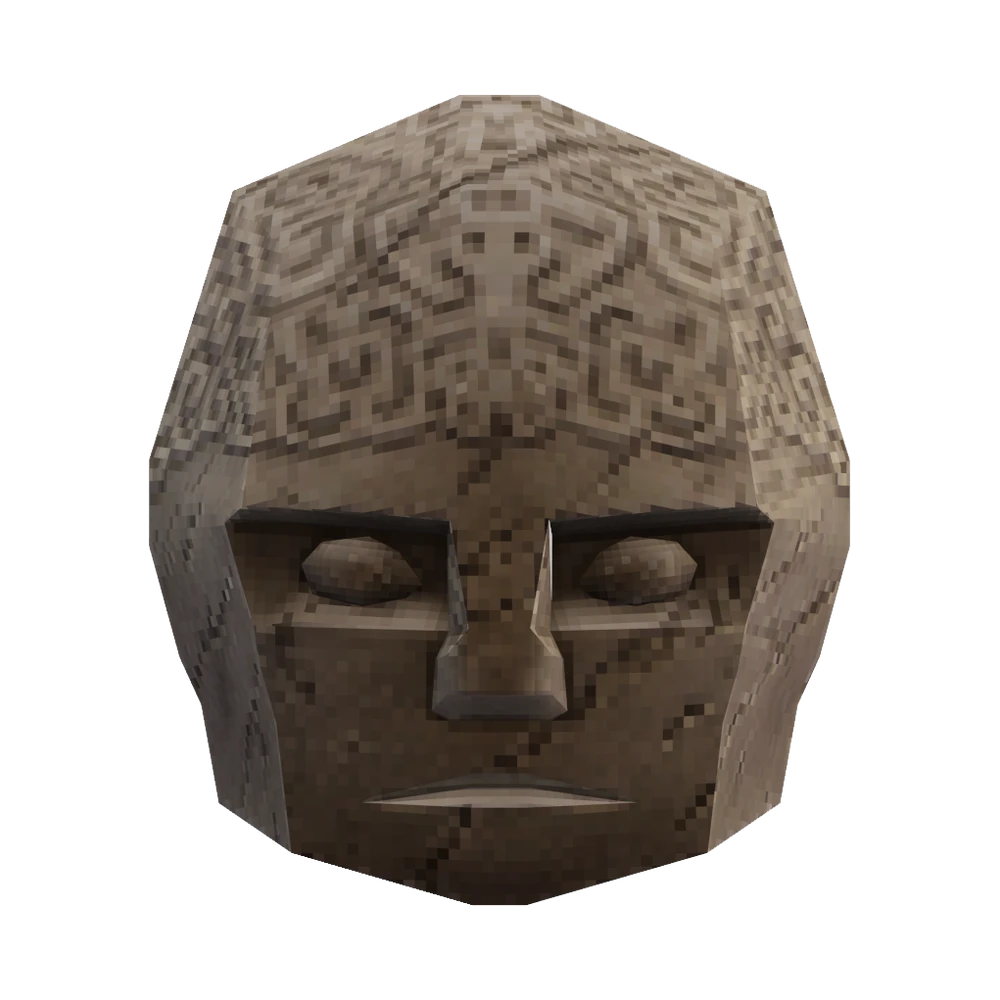

Malicious Faces are large, ominous stone heads with carved facial features. Although they appear to float, a closer look reveals four translucent, spider-like limbs that support their movement. Upon death, these limbs vanish, causing the head to drop to the ground, creating a non-damaging shockwave and killing any enemies beneath it. The corpse can be destroyed with a ground slam, but is otherwise explosion-proof unless covered in gasoline.

Combat Overview
Malicious Faces are slow-moving but relentless foes, using devastating ranged attacks to pressure the player. Their stone exteriors are resistant to explosives, requiring clever strategies to deal damage effectively. As their health drops, their outer shell cracks, and they become enraged at half health on higher difficulties, attacking faster and more aggressively.
Attacks
Hell Energy Barrage: Fires 6 Hell Energy projectiles in rapid succession. These projectiles can be parried individually or deflected with explosions to deal friendly fire damage.
Charged Laser Attack: Fires a hitscan laser that explodes upon contact, dealing significant damage. Telegraphed by a charging noise and visual cues, with a brief spark and "pling" sound before firing. The laser can be parried to detonate it near the Malicious Face.
The laser attack becomes more frequent as the Malicious Face’s health decreases, and they will prioritize this attack when close to the player or during rocket surfing.
Enraged State
On higher difficulties, Malicious Faces become enraged at half health, turning red and revealing glowing yellow eyes. In this state, they attack faster, with shorter cooldowns between actions. Their laser attack becomes particularly dangerous, firing a second laser immediately after the first.
Difficulty Changes
HARMLESS: Fires only 3 Hell Energy orbs per barrage at a slower rate. Laser takes 5 seconds to charge, with a smaller explosion radius.
LENIENT: Fires 3 Hell Energy orbs per barrage. Laser takes 3.5 seconds to charge, with a smaller explosion radius.
VIOLENT: Attacks have reduced cooldowns. Enrages at half health, attacking faster. Laser takes 2 seconds to charge, firing a second laser while enraged.
BRUTAL: Fires 10 Hell Energy projectiles rapidly with slight inaccuracy. Enrages as on Violent but attacks even more aggressively.
Strategies & Tips
Parry Precision: The Hell Energy projectiles and laser can be parried. Timing is key to turning their attacks into opportunities.
Gasoline Exploit: Covering the Malicious Face in gasoline removes its explosion immunity, making it vulnerable to explosives.
Keep Moving: Maintain distance and use the arena’s geometry to break line-of-sight for the laser attack.
Prioritize the Laser: Parrying the laser attack not only nullifies the damage but also deals significant damage to the Malicious Face.
Weapon Choices: Utilize hitscan weapons like the Marksman Revolver or precision-based options like the Railcannon to deal steady damage while avoiding retaliation.